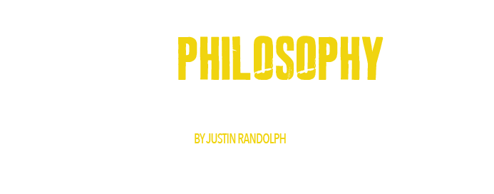

“Wildlands is more than a collection of lodges, campsand properties -- it’s ethos lies in the community of travelers that appreciate wild nature.
Wild nature is under increasing pressure from all directions and is rapidly disappearing. We ultimately seek to protect these wild places through the creation of a sustainable travel venture and the formation of a community of likeminded individuals. Wildlands seeks to conserve these places by bringing travelers into these lands and offering authentic, adventurous, inspired and life-affirming experiences and a promise of light footprints. We want to ensure access to these places for us and for future generations, creating a community of like-minded adventurers and stewards of Nature, and ensuring their access to these lands now and in the future.
We want the traveler be touched, transformed, and imbued with a passion for stewardship and a catalyst to bring more meaning into the everyday lives of others. We seek to leave little impact but achieve great effect, and empower host communities to authentic destinations to share their love of these wild places.
People matter. Locals of wildlands must not be antagonized, but celebrated. Wildlands has the wellbeing of local communities and its people at heart. At Wildlands we prioritize human resource development, social upliftment, sharing economic opportunities and the encouragement of others to build a better future.
We want the traveler be touched, transformed, and imbued with a passion for stewardship and a catalyst to bring more meaning into the everyday lives of others. We seek to leave little impact but achieve great effect, and empower host communities to authentic destinations to share their love of these wild places.
People matter. Locals of wildlands must not be antagonized, but celebrated. Wildlands has the wellbeing of local communities and its people at heart. At Wildlands we prioritize human resource development, social upliftment, sharing economic opportunities and the encouragement of others to build a better future.
“To inspire, To become the brand incarnate of the wilderness. Be the worlds greatest community of wilderness lovers.
Mission: To create a network of light-footprint wilderness properties, and a community of wilderness lovers that in each other, see a common bond. To build a brand that encompasses the inspiration, romance, and excitement of the wilderness. “Do no unnecessary harm. Use business to inspire and implement solutions to the environmental crisis.”
“A portfolio of remote lodges and properties that inspire and connect, and encourage care for the natural world.”
While Wildlands is currently a hospitality company at its core, it sees its role as the facilitator of a community of likeminded individuals who all view what we find in the wild to be much more than self-centered fulfillment. By connecting with the wilderness in a way that’s authentic, we leave feeling recharged, renewed, and inspired. Are decisions in life are more deliberate, and we feel a stronger connection and motivation to conserve and protect the natural world.
Just as Patagonia and the North Face managed to create a consumer products brand that for many consumers was synonymous with exploring the outdoors, so Wildlands seeks to create a hospitality brand that is synonymous with experiences in wild, adventurous landscapes. The moments in Wildlands are temporary, but we hope that they will be permanent in nature that their power and their transformative potential last until the next Wildlands jaunt.
Just as Patagonia and the North Face managed to create a consumer products brand that for many consumers was synonymous with exploring the outdoors, so Wildlands seeks to create a hospitality brand that is synonymous with experiences in wild, adventurous landscapes. The moments in Wildlands are temporary, but we hope that they will be permanent in nature that their power and their transformative potential last until the next Wildlands jaunt.
“There is a restless wanderer in all of us, and wild, remote places serve as our closest setting to home”
We believe (manifesto):
- There is a restless wanderer in all of us, and wild, remote places serve as our closest setting to home.
- The greatest and most rewarding moments in life have been found in the wild while playing in the outdoors.
- In wilderness is the preservation of the world
- To those devoid of imagination, a blank space on the map is a useless waste -- to us, it's the most valuable part
- Wilderness is not a luxury, but a necessity of the human spirit
- Plans to protect air, water, wildlife, and wilderness are in fact plans to protect mankind
- Wild places help us get back in touch with powerful natural rhythms, help us reflect, and in the process, restore our creativity.
- We don't believe in discomfort for discomfort's sake; rather, we believe basic comfort allows us to recharge and renew.
- Do not under estimate the power of a small group of kindred spirits to inspire and change the world.
- It doesn't have to be difficult to get to "the end of the world."
- Community is the magic that makes our favorite moments 'pop.'
- Sometimes you have to get lost to get found.
- We love windy, snowy, crazy days as much as we love a flawless, bluebird day.